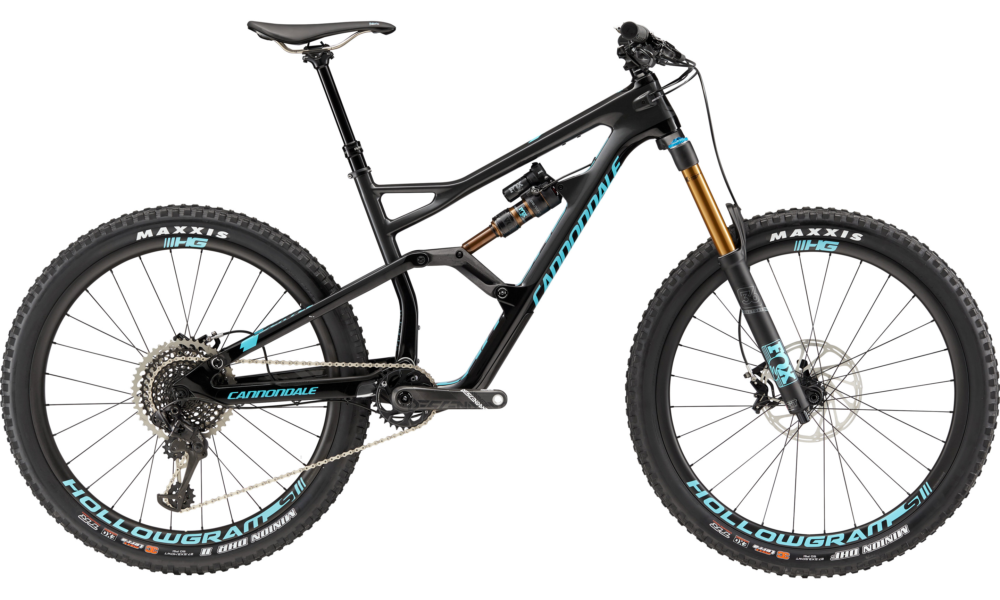
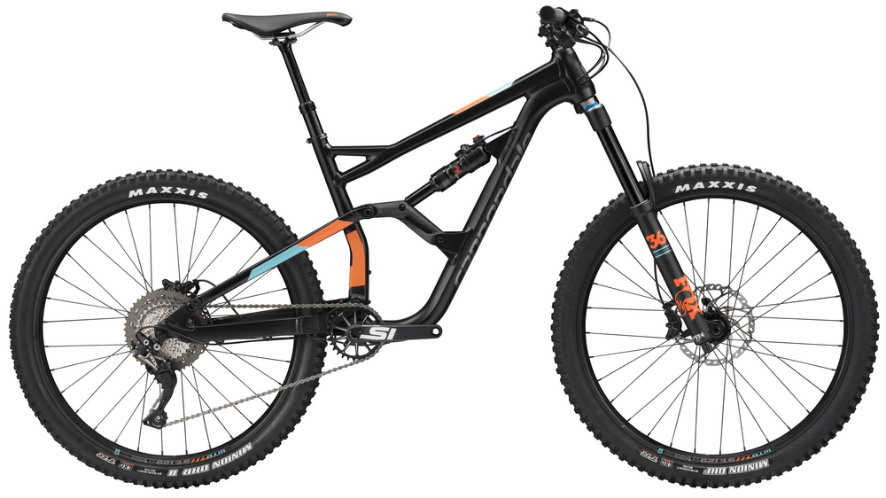
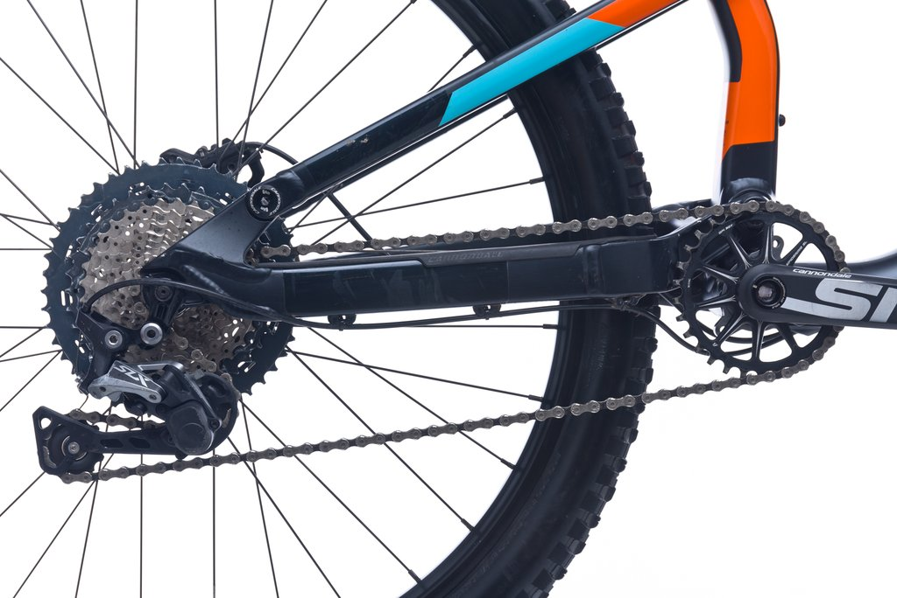

Їдь куди хочеш, катай як хочеш… Після недавньої поїздки з Чемпіоном Світу за enduro — Jerome Clementz, ми спробували порахувати скільки разів він змінював хід підвіски від 95 до 160 мм. Виявилося дуже, дуже багато разів. Звичайно Ми не кажемо, що наша підвіска зробить Вас такими ж швидкими, як і Jerome, але все ж її робота не залишить вас байдужим. Їхати в гору або зі спуску — неважливо. Два велосипеда в одному, та родзинка, яка допоможе відчути себе справжнім Чемпіоном Світу, таким як Jerome. Скажемо просто, це ідеальна машина для ENDURO.
Рама Synapse Disc Asymmetric, карбон BallisTec, Di2 ready, технология SAVE, BB30a, ось 12мм
Вилка Synapse Disc Asymmetric, карбон BallisTec, технология SAVE, ось 12x100мм / конусная рулевая для ростовок - 44-48см - 1 1/8"; для ростовок 51-54см - 1-1/8" - 1-1/4"; для ростовок 56-61см - 1-1/8" - 1-3/8"
Шатуны FSA Omega Alloy, 50/34
Ручки переключения(манетки) Shimano Tiagra, 2x10
Руль Cannondale C4, алюминий 6061, Compact
Вынос Cannondale C4, алюминий 6061, 31.8, 7-град
Рулевая колонка Synapse Si, 25mm Alloy top cap
Грипсы Cannondale Grip Bar Tape w/Gel, 3.5mm
Подседельная труба Cannondale C4, алюминий 6061, 25.4 x 350мм (44-56), 400мм (58-61)
Седло Cannondale Stage Ergo
Спицы Сталь 14g
Обода RD 3.0, 24h отверстия под спицы на переднем колесе, 28h отверстий под спицы на заднем колесе
Втулки Formula RX-512 12x100 - передняя; RX-142 12x142 - задняя
Покрышки Vittoria Zaffiro, 700 x 28c
Передний переключатель Shimano Tiagra, braze-on
Задний переключатель Shimano Tiagra GS
Кассета Shimano Tiagra, 11-34, 10-ск.
Цепь KMC X10EL, 10-ск
Передний тормоз Гидравлический дисковый Shimano Tiagra, ротор RT56 160мм
Задний тормоз Гидравлический дисковый Shimano Tiagra, ротор RT56 160мм
Ручки тормоза Shimano Tiagra hydro disc
